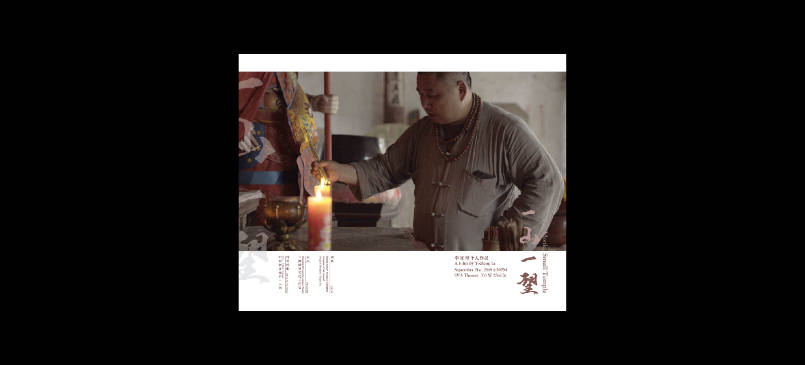
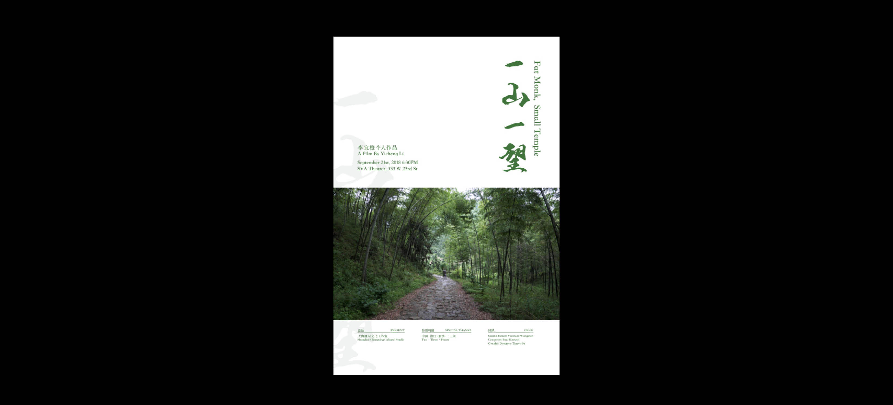
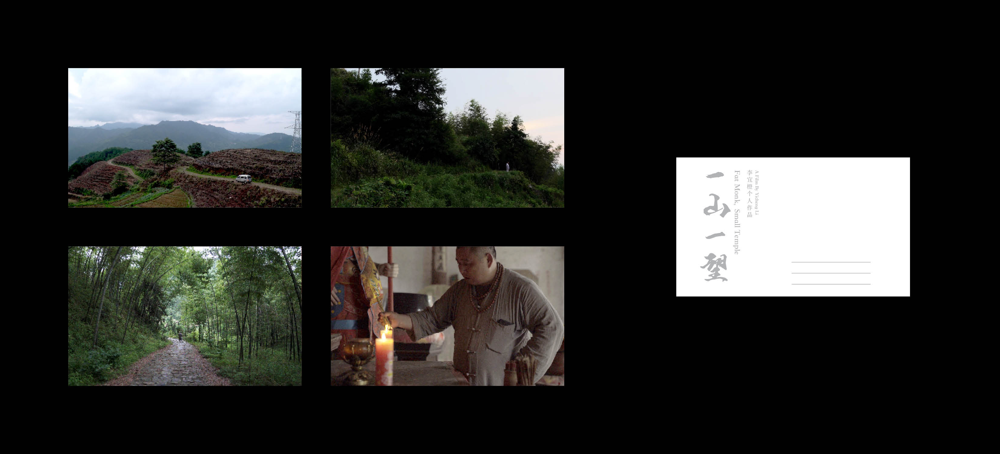

*Print
*Typeface
2018
Below is a project designed for Mrs.Yicheng Li's MFA Social Documentary Film Thesis 2018 — "Fat Monk, Small Temple." The final direction landed on typography and layout that represents the religion and story. Please contact her by yicheng.iris@gmail.com, if you are interested in her work.


